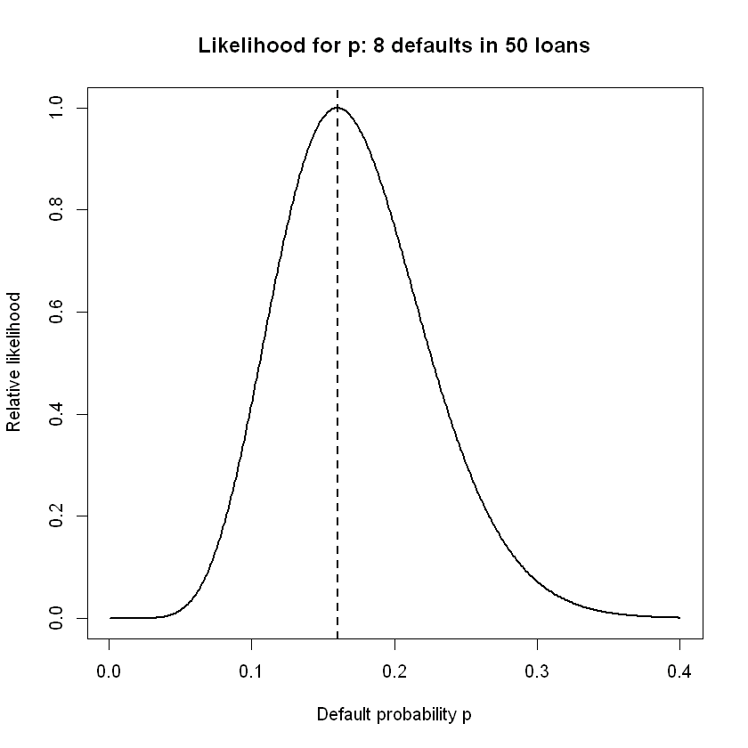
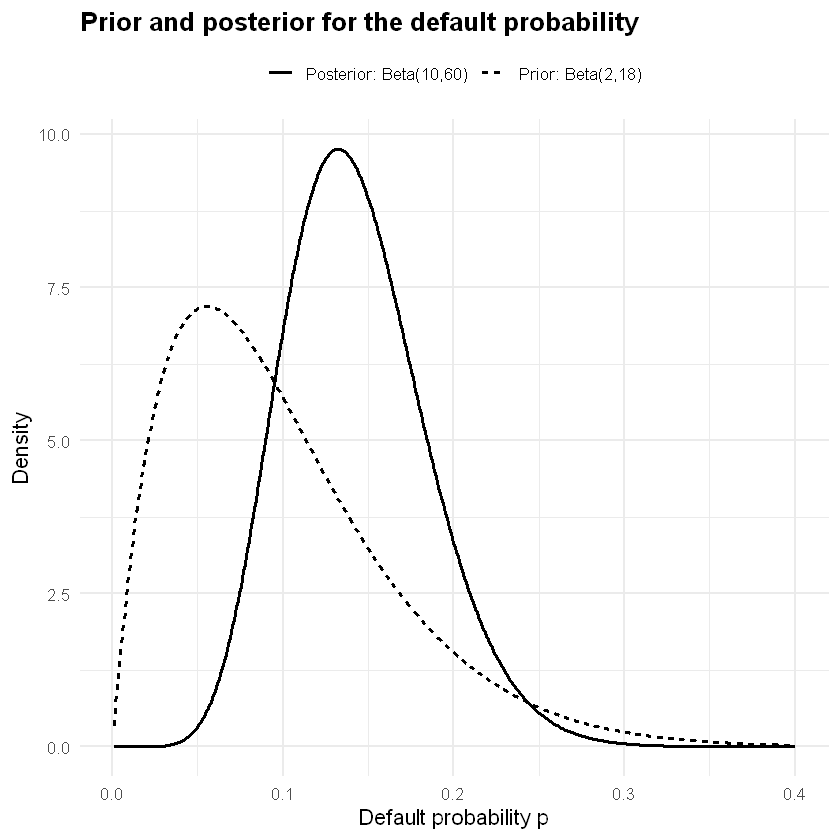
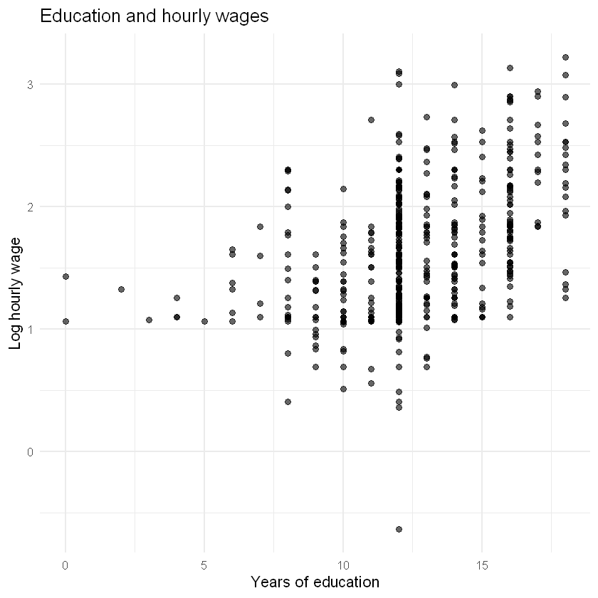
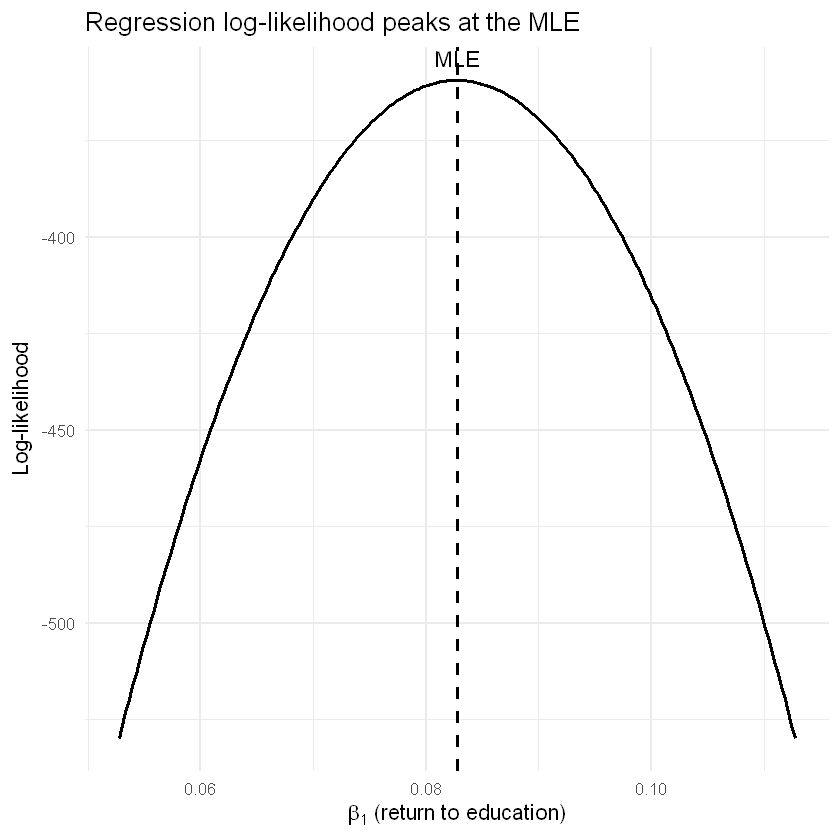

HS 821 · Lecture 3 · Topics in Time Series Econometrics
Sunil Paul
12 August 2026 · R 4.6
This is the third and final part of the review. Parts I–II introduced probability, random variables, sampling, and estimators. Here we turn to statistical inference: how we use a sample to learn about unknown population parameters.
The emphasis is on the intuition behind likelihood, frequentist inference, and Bayesian inference. We first study one unknown probability using a loan-default example, and then apply the same logic to a linear regression.
Statistical inference: what are we trying to do?
Suppose a probability model contains an unknown parameter \(\theta\).
We observe a sample
\[
y=(y_1,\ldots,y_n)
\]
and want to learn about \(\theta\).
Estimation gives us plausible values for the unknown parameter. Inference tells us how uncertain we should be about those values.
Two major approaches are used:
Framework
Main idea
Frequentist
Treat the parameter as fixed but unknown and study how an estimator behaves across repeated samples
Bayesian
Represent uncertainty about the parameter with a probability distribution and update it using the observed data
For likelihood-based methods, both approaches begin with the same ingredient: a probability model for the data.
From a probability model to a likelihood
Example: estimating a loan-default probability
Suppose a bank observes 50 comparable loans, of which 8 default.
For any proposed value of \(p\), the probability of observing exactly \(k=8\) defaults is
\[
P(K=8\mid p)
=
{50\choose 8}p^8(1-p)^{42}.
\]
Once the data have been observed, \(k=8\) is fixed. We now regard this expression as a function of the unknown parameter \(p\):
\[
L(p;k)
=
{50\choose 8}p^8(1-p)^{42}.
\]
Terms that do not depend on \(p\) do not affect which value maximises the likelihood, so we often write
\[
L(p)\propto p^8(1-p)^{42}.
\]
Intuition: different values of \(p\) make the observed result—8 defaults in 50 loans—more or less compatible with the probability model. The likelihood measures this relative support.
More generally,
\[
L(\theta;y)=f(y\mid\theta).
\]
The observed data \(y\) are held fixed and the likelihood is viewed as a function of \(\theta\).
Important: a likelihood is not itself a probability distribution for the parameter. It does not need to integrate to one over \(\theta\).
Show R code
# Likelihood for the loan-default probabilityn <-50k <-8p_grid <-seq(0.001, 0.40, length.out =500)log_lik <-dbinom( k,size = n,prob = p_grid,log =TRUE)# Scale the likelihood so its maximum is 1rel_lik <-exp(log_lik -max(log_lik))p_hat <- k / nplot( p_grid, rel_lik,type ="l",lwd =2,xlab ="Default probability p",ylab ="Relative likelihood",main ="Likelihood for p: 8 defaults in 50 loans")abline(v = p_hat, lty =2, lwd =2)p_hat
0.16

The likelihood peaks at
\[
\hat p=\frac{8}{50}=0.16.
\]
This is the maximum-likelihood estimate (MLE).
The data therefore provide greatest support to a default probability of about 16%, although nearby values are also plausible. Inference asks how much uncertainty remains around this estimate.
Frequentist inference: uncertainty through repeated sampling
In the frequentist framework, \(p\) is a fixed but unknown constant.
Before the sample is observed, the data are random. Therefore the estimator
The standard error is the standard deviation of an estimator’s sampling distribution. It measures how much the estimate would vary from sample to sample.
Confidence interval
A 95% confidence-interval procedure is constructed so that, under repeated sampling, about 95% of the intervals produced by that procedure contain the true parameter.
The 95% refers to the procedure, not to a probability assigned to the fixed parameter after this particular interval has been calculated.
Hypothesis test and p-value
A hypothesis test asks whether the observed result would be unusual if a specified null hypothesis were true.
For example,
\[
H_0:p=0.10.
\]
The p-value is the probability, under the null model, of obtaining a test statistic at least as extreme as the one observed. It is not the probability that \(H_0\) is true.
Show R code
# Frequentist inference for pp_hat <- k / n# Exact (Clopper-Pearson) test and intervaldefault_test <-binom.test(x = k,n = n,p =0.10,conf.level =0.95)# Normal-approximation (Wald) standard error and interval, for comparisonwald_se <-sqrt(p_hat * (1- p_hat) / n)wald_ci <- p_hat +c(-1, 1) *1.96* wald_secat("p_hat =", round(p_hat, 4), "\n")cat("Wald SE =", round(wald_se, 4), "\n")cat("Wald 95% CI=", round(wald_ci, 4), "\n\n")default_test
Exact binomial test
data: k and n
number of successes = 8, number of trials = 50, p-value = 0.1559
alternative hypothesis: true probability of success is not equal to 0.1
95 percent confidence interval:
0.07170077 0.29112631
sample estimates:
probability of success
0.16
Reading the result
The point estimate is \(\hat p=0.16\).
binom.test reports the exact (Clopper–Pearson) interval, \([0.072,\,0.291]\). It is not symmetric around \(\hat p\) and differs slightly from the Wald interval \(\hat p \pm 1.96\,\widehat{\mathrm{SE}}\) printed above; the two agree more closely as \(n\) grows.
The p-value (\(\approx 0.16\)) evaluates how unusual 8 defaults in 50 would be if the true default probability were 10%. At the 5% level it does not reject \(H_0:p=0.10\).
The frequentist question is therefore:
How would our estimator behave if we repeatedly sampled loans from the same population?
Bayesian inference: updating uncertainty with data
Bayesian inference starts from the same likelihood but adds a prior distribution for the unknown parameter.
Prior\(\pi(p)\) describes uncertainty about \(p\) before seeing the current data.
Likelihood\(L(p;y)\) describes what the observed data say about different values of \(p\).
Posterior\(\pi(p\mid y)\) describes uncertainty about \(p\) after combining prior information with the data.
A simple prior
Suppose previous experience suggests default rates around 10%. For illustration, take
\[
p\sim\operatorname{Beta}(2,18).
\]
Its prior mean is
\[
E(p)=\frac{2}{2+18}=0.10.
\]
The Beta distribution is convenient for probabilities because all of its mass lies between 0 and 1.
Updating the prior
For a Binomial likelihood and a Beta prior,
\[
p\sim\operatorname{Beta}(a,b),
\]
the posterior is again Beta:
\[
p\mid y
\sim
\operatorname{Beta}(a+k,\;b+n-k).
\]
With \(a=2\), \(b=18\), \(k=8\), and \(n=50\),
\[
p\mid y
\sim
\operatorname{Beta}(10,60).
\]
The posterior mean is
\[
E(p\mid y)
=
\frac{10}{70}
\approx0.143.
\]
Intuition: the sample alone suggests 16%; the prior was centred at 10%; the posterior combines both sources of information and lies between them.
Show R code
# Bayesian inference for pa_prior <-2b_prior <-18a_post <- a_prior + kb_post <- b_prior + n - kposterior_mean <- a_post / (a_post + b_post)credible_interval <-qbeta(c(0.025, 0.975), a_post, b_post)prob_above_10 <-1-pbeta(0.10, a_post, b_post)round(c(posterior_mean = posterior_mean,lower_95 = credible_interval[1],upper_95 = credible_interval[2],`P(p > 0.10 | data)`= prob_above_10 ),4)library(ggplot2)# Grid of possible values of pp_grid <-seq(0.001, 0.40, length.out =500)# Data for plottingplot_data <-data.frame(p =rep(p_grid, 2),density =c(dbeta(p_grid, a_prior, b_prior),dbeta(p_grid, a_post, b_post) ),distribution =rep(c("Prior: Beta(2,18)", "Posterior: Beta(10,60)"),each =length(p_grid) ))ggplot(plot_data, aes(x = p, y = density,linetype = distribution)) +geom_line(linewidth =1) +labs(title ="Prior and posterior for the default probability",x ="Default probability p",y ="Density",linetype =NULL ) +theme_minimal(base_size =13) +theme(legend.position ="top",plot.title =element_text(face ="bold") )
posterior_mean
0.1429
lower_95
0.0717
upper_95
0.2332
P(p > 0.10 | data)
0.8516

A 95% credible interval contains 95% of the posterior probability for \(p\), conditional on the model, prior, and observed data.
Unlike a frequentist confidence interval, we can also ask direct probability questions such as
\[
P(p>0.10\mid y).
\]
On these data that posterior probability is about 0.85, while the exact frequentist test does not reject \(H_0:p=0.10\) at the 5% level (p-value \(\approx 0.16\)). The two results are not in conflict: they answer different questions. The test asks how surprising 8 defaults in 50 would be if\(p=0.10\); the posterior asks how probable \(p>0.10\) is given the data and prior.
Frequentist and Bayesian inference compared
Question
Frequentist
Bayesian
Unknown parameter
fixed but unknown
uncertainty represented by a distribution
Data model
Binomial likelihood
same Binomial likelihood
Additional ingredient
repeated-sampling principle
prior distribution
Point summary
MLE \(\hat p\)
posterior mean/median/mode
Uncertainty
sampling distribution
posterior distribution
Interval
confidence interval
credible interval
Probability statement
about repeated samples/procedures
about the parameter conditional on model, prior and data
The two approaches use the same observed data and likelihood, but represent and interpret uncertainty differently.
From one parameter to regression
The loan example contains one unknown parameter, \(p\). Econometric models usually contain several unknown parameters.
We now use an economic dataset and ask:
How is hourly wage associated with years of education?
We use the wage1 dataset from the wooldridge R package.
Let
\[
Y_i=\log(\text{hourly wage}_i),
\qquad
X_i=\text{years of education}_i.
\]
We consider the simple regression
\[
Y_i=\beta_0+\beta_1X_i+\varepsilon_i.
\]
This is an associational regression. By itself it does not establish that education has a causal effect on wages.
Show R code
# Run once if the package is not installed:#install.packages("wooldridge")if (!requireNamespace("wooldridge", quietly =TRUE)) {stop("Please install the 'wooldridge' package before running this cell.")}data("wage1", package ="wooldridge")head(wage1[c("wage", "lwage", "educ")])ggplot(wage1, aes(x = educ, y = lwage)) +geom_point(alpha =0.6, size =2) +labs(title ="Education and hourly wages",x ="Years of education",y ="Log hourly wage" ) +theme_minimal(base_size =13)
A data.frame: 6 × 3
wage
lwage
educ
<dbl>
<dbl>
<int>
1
3.10
1.131402
11
2
3.24
1.175573
12
3
3.00
1.098612
11
4
6.00
1.791759
8
5
5.30
1.667707
12
6
8.75
2.169054
16

Creating the likelihood for a regression
The regression equation alone specifies the conditional mean:
\[
E(Y_i\mid X_i=x_i)
=
\beta_0+\beta_1x_i.
\]
To construct a likelihood, we also need a probability model for the disturbances. Assume
For a fixed \(\sigma\), maximising the Gaussian log-likelihood with respect to \(\beta_0\) and \(\beta_1\) is equivalent to minimising
\[
\sum_{i=1}^{n}
(y_i-\beta_0-\beta_1x_i)^2.
\]
Therefore, under normally distributed errors, the maximum-likelihood estimates of the regression coefficients are the same as the ordinary least-squares estimates.
The computer searches over possible values of \((\beta_0,\beta_1,\sigma)\) and chooses the combination that makes the observed wage data most compatible with the Gaussian regression model.
Now compare the likelihood estimates with ordinary least squares.
Show R code
# Ordinary least squaresfit <-lm(lwage ~ educ, data = wage1)coef(fit)# Compare OLS and maximum-likelihood coefficient estimatesrbind(MLE = mle_estimates[c("beta0", "beta1")],OLS =coef(fit))# Standard errors also agree: MLE SEs from the inverted Hessian vs OLS SEsmle_se <-sqrt(diag(solve(mle_fit$hessian)))[1:2]se_tab <-rbind(`MLE SE`=unname(mle_se),`OLS SE`=unname(summary(fit)$coefficients[, "Std. Error"]))colnames(se_tab) <-c("beta0", "beta1")round(se_tab, 4)
(Intercept)
0.583772665724055
educ
0.082744367383009
A matrix: 2 × 2 of type dbl
beta0
beta1
MLE
0.5837725
0.08274438
OLS
0.5837727
0.08274437
A matrix: 2 × 2 of type dbl
beta0
beta1
MLE SE
0.0972
0.0076
OLS SE
0.0973
0.0076
Show R code
# The regression likelihood, viewed along the slope beta1# (holding beta0 and sigma fixed at their MLE values)b0_hat <- mle_estimates["beta0"]sig_hat <- mle_estimates["sigma"]b1_grid <-seq( mle_estimates["beta1"] -0.03, mle_estimates["beta1"] +0.03,length.out =200)profile_ll <-sapply(b1_grid, function(b1) {sum(dnorm(y, mean = b0_hat + b1 * x, sd = sig_hat, log =TRUE))})ll_data <-data.frame(beta1 = b1_grid,log_likelihood = profile_ll)ggplot(ll_data, aes(x = beta1, y = log_likelihood)) +geom_line(linewidth =1) +geom_vline(xintercept = mle_estimates["beta1"],linetype ="dashed",linewidth =1 ) +annotate("text",x = mle_estimates["beta1"],y =max(profile_ll),label ="MLE",vjust =-0.8 ) +labs(title ="Regression log-likelihood peaks at the MLE",x =expression(beta[1] ~"(return to education)"),y ="Log-likelihood" ) +theme_minimal(base_size =13)

Frequentist regression inference
The regression coefficient \(\beta_1\) is treated as a fixed but unknown parameter.
The OLS/MLE estimate \(\hat\beta_1\) is calculated from the observed sample. Across repeated samples it would vary, giving it a sampling distribution.
From that sampling distribution we obtain:
a standard error for \(\hat\beta_1\);
a confidence interval for \(\beta_1\);
a test of a hypothesis such as
\[
H_0:\beta_1=0.
\]
The slope in this log-wage regression is approximately the proportional difference in hourly wage associated with one additional year of education.
Show R code
summary(fit)confint( fit,"educ",level =0.95)
Call:
lm(formula = lwage ~ educ, data = wage1)
Residuals:
Min 1Q Median 3Q Max
-2.21158 -0.36393 -0.07263 0.29712 1.52339
Coefficients:
Estimate Std. Error t value Pr(>|t|)
(Intercept) 0.583773 0.097336 5.998 3.74e-09 ***
educ 0.082744 0.007567 10.935 < 2e-16 ***
---
Signif. codes: 0 '***' 0.001 '**' 0.01 '*' 0.05 '.' 0.1 ' ' 1
Residual standard error: 0.4801 on 524 degrees of freedom
Multiple R-squared: 0.1858, Adjusted R-squared: 0.1843
F-statistic: 119.6 on 1 and 524 DF, p-value: < 2.2e-16
A matrix: 1 × 2 of type dbl
2.5 %
97.5 %
educ
0.06787958
0.09760915
Interpretation
For wage1, the estimated slope is \(\hat\beta_1\approx0.083\) with a standard error of about \(0.008\) (so \(t\approx11\) and a p-value effectively \(0\)), and a 95% confidence interval of roughly \([0.068,\,0.098]\). One additional year of education is therefore associated with approximately an 8% higher hourly wage, on average, in this simple bivariate regression (\(R^2\approx0.19\), \(n=526\)).
The standard error measures the sampling uncertainty of the estimated slope; the confidence interval is interpreted through repeated sampling; and the p-value evaluates \(H_0:\beta_1=0\) under the assumed regression model.
Again, this is an association and should not automatically be interpreted as a causal effect.
For realistic models the posterior is often obtained numerically. Here we use MCMCregress() from the MCMCpack package to generate draws from the posterior. The computational details of MCMC are not our focus here; the important point is that the draws allow us to summarise posterior uncertainty.
Show R code
# Run once if the package is not installed:# install.packages("MCMCpack")if (!requireNamespace("MCMCpack", quietly =TRUE)) {stop("Please install the 'MCMCpack' package before running this cell.")}bayes_fit <- MCMCpack::MCMCregress( lwage ~ educ,data = wage1,# Prior mean for (beta0, beta1)b0 =c(0, 0),# Prior precision matrix:# beta0 ~ approximately N(0, 10^2)# beta1 ~ approximately N(0, 1^2)B0 =diag(c(0.01, 1)),# Weak prior on the disturbance variancec0 =0.001,d0 =0.001,burnin =2000,mcmc =10000,seed =821)summary(bayes_fit)
Iterations = 2001:12000
Thinning interval = 1
Number of chains = 1
Sample size per chain = 10000
1. Empirical mean and standard deviation for each variable,
plus standard error of the mean:
Mean SD Naive SE Time-series SE
(Intercept) 0.58448 0.098321 9.832e-04 9.686e-04
educ 0.08268 0.007623 7.623e-05 7.623e-05
sigma2 0.23137 0.014255 1.426e-04 1.426e-04
2. Quantiles for each variable:
2.5% 25% 50% 75% 97.5%
(Intercept) 0.39415 0.51807 0.58438 0.65156 0.77447
educ 0.06788 0.07743 0.08272 0.08786 0.09741
sigma2 0.20511 0.22153 0.23082 0.24068 0.26101
Show R code
# Posterior summaries for the education coefficientbeta1_post <- bayes_fit[, "educ"]posterior_mean <-mean(beta1_post)posterior_sd <-sd(beta1_post)credible_interval <-quantile(beta1_post, c(0.025, 0.975))prob_positive <-mean(beta1_post >0)round(c(posterior_mean = posterior_mean,posterior_sd = posterior_sd,lower_95 = credible_interval[1],upper_95 = credible_interval[2],`P(beta1 > 0 | data)`= prob_positive ),4)post_data <-data.frame(beta1_post = beta1_post)ggplot(post_data, aes(x = beta1_post)) +geom_density(linewidth =1) +geom_vline(xintercept = credible_interval,linetype ="dashed",linewidth =1 ) +geom_vline(xintercept =coef(fit)["educ"],linewidth =1 ) +annotate("text", x = credible_interval[1], y =0, label ="2.5%", vjust =-1) +annotate("text", x = credible_interval[2], y =0, label ="97.5%", vjust =-1) +annotate("text", x =coef(fit)["educ"], y =0, label ="OLS", vjust =-1) +labs(title ="Posterior distribution of the education coefficient",x =expression(beta[1]),y ="Density" ) +theme_minimal(base_size =13)
posterior_mean
0.0827
posterior_sd
0.0076
lower_95.2.5%
0.0679
upper_95.97.5%
0.0974
P(beta1 > 0 | data)
1
Don't know how to automatically pick scale for object of type <mcmc>. Defaulting to continuous.
The Bayesian result is interpreted directly from the posterior:
the posterior mean is a point summary of \(\beta_1\);
the posterior standard deviation measures posterior uncertainty;
the 95% credible interval contains 95% of the posterior probability for \(\beta_1\);
\(P(\beta_1>0\mid y,X)\) is the posterior probability that the association between education and log wages is positive, conditional on the model and prior.
With a reasonably informative sample and weak priors, the Bayesian and frequentist numerical results will often be similar. Their interpretations remain different.
Frequentist and Bayesian regression inference: side by side
Question
Frequentist
Bayesian
Parameter \(\beta_1\)
fixed but unknown
uncertainty represented by a posterior distribution
Probability model
Gaussian regression
same Gaussian regression
Likelihood
\(L(\beta_0,\beta_1,\sigma;y,X)\)
same likelihood
Additional ingredient
repeated-sampling principle
prior distribution
Point summary
OLS / MLE \(\hat\beta_1\)
posterior mean/median/mode
Uncertainty measure
standard error
posterior standard deviation
95% interval
confidence interval
credible interval
Direct probability such as \(P(\beta_1>0\mid y)\)
not a frequentist parameter-probability statement
obtained directly from posterior draws
Same data. Same probability model. Same likelihood. Different treatment and interpretation of uncertainty.
On wage1 the two columns are numerically almost identical—both give a slope near 0.083 with a 95% interval close to [0.068, 0.098] (see the comparison table above). With 526 observations and weak priors the likelihood dominates, so the posterior sits essentially on top of the OLS estimate, and the posterior mean \(\approx\) MLE. They would diverge if the sample were small or the prior strong—precisely the setting where Bayesian shrinkage becomes valuable, as in the VARs later in the course.